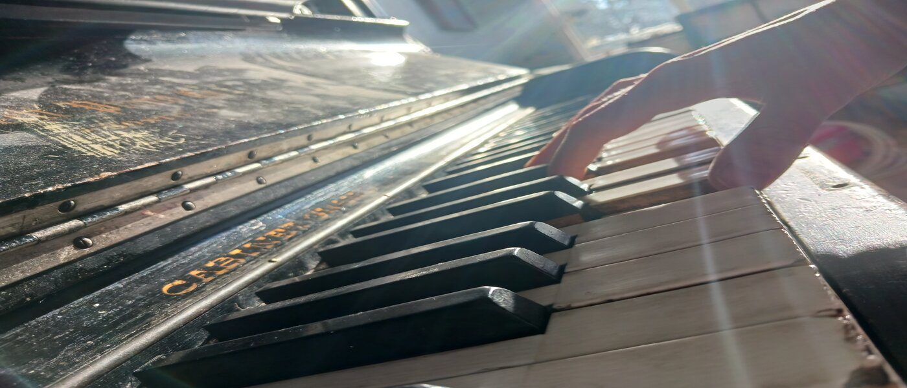
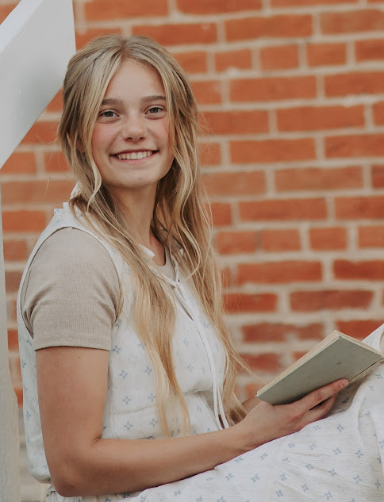

Kate Williams- Finest Piano Education
Piano is the most versatile instrument. Everything from jazz and acoustic, to rock and roll and rap has been arranged for the piano. It’s been one of the most popular and widely played instruments since its creation in the early 1700s. It also is one of the most effective hobbies to increase brain activity, attention to detail, and increased concentration and memory. You can learn how to become a skilled performer on this incredible instrument!
It takes practice and dedication, and because of its complexity, a good, knowledgeable, and patient teacher can shape and speed up your learning exponentially. “I may be young, but I believe this is one way I’m able to connect with children and teenagers that want to learn the piano. I know what it’s like to be busy with school and other activities, and the discipline it takes to practice.” One such teacher is Kate Williams.
Though she’s only eighteen years old, she has six years of teaching experience and has received several performance opportunities. As the student of two remarkable teachers, Angie Lloyd and Mark Neiwirth, she has learned many skills and techniques that she readily passes on to her students. Through her personal connection and one-on-one lessons, she is able to understand each student’s needs, and give them the exercises and repertoire that will help them succeed.

“There’s no feeling like guiding students to learn music. It takes my love of piano, and combines it with the opportunity to directly help and mentor others.”
-Kate Williams